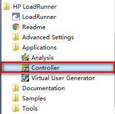
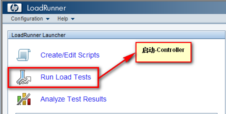
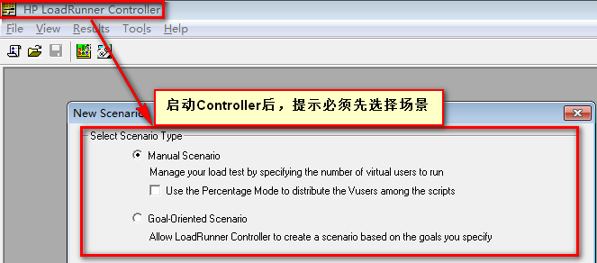

Controller运行及Scenario(场景)
目标
- 了解Controller的启动方式
- 了解什么是场景
- 掌握Controller的场景分类
为什么要学习Controller
1. 集合点需要在Controller场景中运行；
2. 性能测试就是模拟应用程序在【真实环境】中运行的情况;
(真实环境:就是需要模拟搭建各种业务场景，各种应用场景的搭建就需要Controller工具)
一、Controller运行方式
- 从VuGen脚本直接启动Controller【已讲解】
- 直接运行Controller 【推荐】
- 通过LR工具管理器运行
1.1 运行-直接运行Controller工具

开始菜单 -> HP LoadRunner -> Applications -> Controller【建议发送桌面快捷方式】
1.2 运行-通过LR工具管理器

- 开始程序 -> HP LoadRunner -> LoadRunner
- 点击 Run Load Tests
1.3 运行

运行Controller后，提示先选择场景；
二、场景概念
一个应用程序，有不同的操作功能且支持多用户同时应用，【模拟不同的用户进行不同的操作】，这就是场景
(比如：机票网站，5个用户在进行注册业务，20个用户在进行订票操作，5个注册 + 20个订票 = 场景）
三、Controller场景分类
Goal-Oriented Scenario(目标场景)【了解】
Manual Scenario(手工场景)【重点】